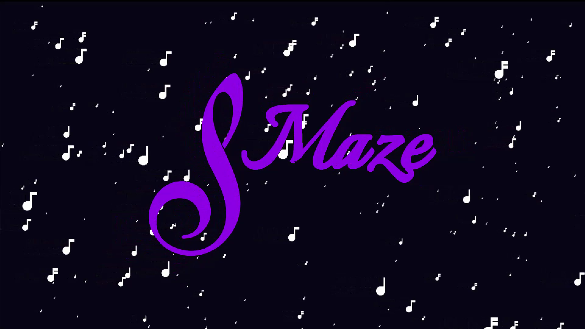
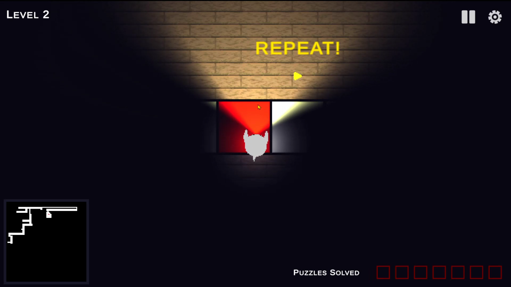

Home
text
Links
Projects
S-Maze


A project for the course Sound and Music Technology, together with Themis Andreopoulos, Nick Jansen, Anna Kołodziejczyk, Franka van der Salm and Andrea Suklan. Main contributions include maze generation, audio system, UI design.
3D Object Retrieval System
A project for the course Multimedia Retrieval, together with Ophelia Lee. Database of feature vectors of 3D objects from object database. Extract features from query object and retrieve k most similar objects from the database.
Ray Tracer / Path Tracer
A real-time path tracer based on the Ray Tracer series by The Cherno. Scene with spheres with different materials. Will be expanded with triangle meshes and acceleration structures.